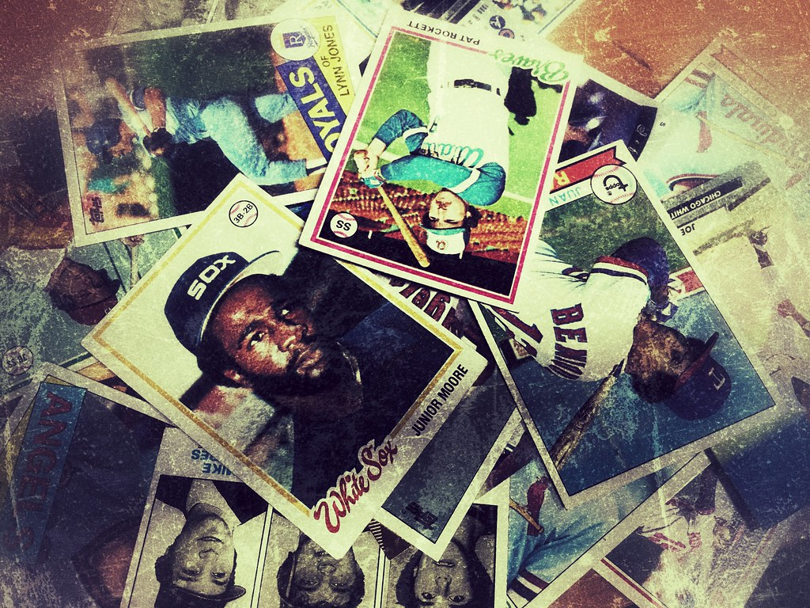
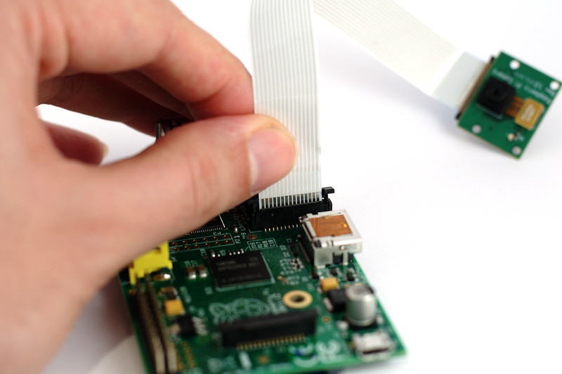

Making something cool is often in the eye of the beholder. Who wants to use a product that is not useful, pleasing or beneficial? Most people like order in life. When a product reduces chaos, confusion and complexity it is often successful. A
product that can fill a need, be reasonably priced and useful is a great starting point. Sometimes we don't even know we need a product until we see it. Congrats to marketers who can 'sell' a product and find buyers for things with limited
utility that are novelties.
By Steven on January, 29, 2021
social
MARKETING
VIABLE MARKET
If you are building a product (unless it is for your own interests) that is not beneficial to a market, why make it in the first place? If you want a machine that will inventory your baseball cards or a coin collection, keep an archival
copy and give you a rough estimate as to how much is it worth every 6 months or in real time would you pay money for it? What lengths to people currently go to to scan 1,000 cards and track prices? Unless you are a dealer, the investment to
inventory a collection maybe more work than what is worth? I think technology can help with keeping track of a collection...
By Steven on January, 29, 2021
social

DEVICES
BASEBALL CARD INVENTORY
Cheap computing helps. Reducing complexity even helps more. The growth potential for single purposes devices because of 1) cost and 2) complexity reduction is beneficial. This is just a bit of predicting, but anytime a company can
reduce completion and solve a needed problem (that is very repetitive and complex) it is a win-win! My reasons for developing an inventory system on Raspberry Pies are cheap computing device, great camera, ability to store on a portable
hard drive...
By Steven on January, 29, 2021
social

OPEN SOURCE SOFTWARE
TESSERACT IMAGES TO TEXT
My hope is that Tesseract, which is open source software, can accurately take a .jpg image on the the image of thousands of cards such as a 1984 Topps "Pete Rose" card and then log it in a database as "Pete Rose" and on the back the
3 digit number for confirmation. Also developing a photo booth for cards with an attached camera on a Raspberry pie and the processor will do an accurate enough job. Yes, there will need to be template declarations for each year and
card company differences, but it is my hope Tesseract image software can fill the void...
By Steven on January, 29, 2021
social
Steven Schwengel
With years of passionate customer service, enjoys reading and helping others learn and use various resources